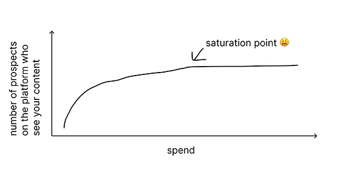
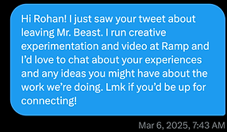

How to validate the ROI of new ad channels when you're not allowed to just choose based on vibes
Hi! I'm Kendall, 2x founder, internet junkie, and the new Head of Creative Experimentation at Ramp. Before starting this job, I've always worked at startups so I've chosen and refined ad channels based on the classics: TikTok gets you views, Meta gets you sales, and LinkedIn gives you existential dread (joke!).
But Ramp is a BIG company (at least for me). We have 40,000+ companies relying on our corporate card and expense management solutions which means we can't just run ads on the classic channels because each channel eventually hits diminishing returns, especially once you've reached all your ideal customers there.

So as part of my role in creative experimentation, we are starting to experiment with new ad channels with the goals being:
- Find "alpha" opportunities (if you're somewhere before other companies, you get cheaper results and better ROAS)
- Scale our ad spend to continue accelerating our monumental growth.
With any new channel, you should take the following steps if you want to be just like me and join a company as employee #1,000 but take credit for all the company's success (or just run a great marketing org).
1. Constantly source new ideas
- Form a strong network: Take at least 1 call with an expert or peer every single week to ask what cutting edge platforms they're exploring.
- NB: It's especially important to talk to marketers in sectors that are known for high competition and rapid innovation, like B2C and DTC.
- Stay informed: Follow relevant Twitter feeds, subscribe to newsletters, and listen to podcasts to stay ahead of trends. Recommendations:
- Creator Economy: The Colin and Samir Show
- E-Commerce Digital Marketing: Ecommerce Playbook
- OOH: Beyond the Billboard
- Experimentation and Product: Lenny's Newsletter
- Growth tidbits: @julian
- DTC marketing: @taylorholiday
- Take calls with people trying to sell you things. It's awkward, but treat it like dating. You have to filter through the bad ones to find the gems!

I reach out to people all the time if I think they're interesting and I want to learn from them. Great way to learn and make new friends!
2. Formulate hypotheses
- Come up with hypotheses about why certain channels will work and what the cheapest way to test them will be (both in terms of time and money).
- Compare these hypotheses against each other. The cheapest tests aren't necessarily the best because if something might have a huge ROI, you'll need to run that test at some point.
- Set aside a testing budget each month or quarter.
- Prioritize not based on cheapest/quickest but rather based on potential ROI versus cost.
3. Plan a test!
- Set a timeframe for the test with your success metric clearly outlined so that you hold yourself accountable.
- Suggested success metrics for B2B:
- Cost Per Lead (CPL)
- Cost per $SQL (i.e. if you spend $1 on an ad, how many $'s of SQL do you earn?)
- Return on Ad Spend (ROAS)
- Suggested success metrics for B2C:
- Cost Per Lead (CPL)
- Average Deal Size
- Return on Ad Spend (ROAS)
- NB: Success for new channels likely won't match established channels immediately. Instead, identify signals that warrant additional investment.
- Create a detailed test document outlining your methodology, metrics, duration, and necessary tracking.
- Test your data pipelines so that you don't waste money on something like running TikTok ads and then realizing your UTM parameters aren't working (unless you have a very forgiving boss like I do).
4. Launch the test!
- Use your best performing creatives from other channels to run a test. You likely don't need new creative unless you're:
- Very new to market (in which case do Meta and TikTok first!)
- Testing an insane new channel like drone advertising and you don't already have the creative.
- Examples:
- If you're testing AppLovin, use your Meta videos
- If you're testing newspapers use your best static content
- If you're testing carrier pigeons use your direct mail creative.
- If you use new content on a new channel then there are too many variables to your test and if it fails then maybe your new creative just sucked.
Examples of some of our better performing videos
5. Analyze the test!
- Did your new channel hit the success metrics you set out at the beginning?
- How does your new channel compare to your legacy channels?
- Do you have hypotheses about how to improve the channel performance?
- Is there any reason this channel will have diminishing returns (i.e. small number of users or cost going up?)
- Kill your babies
- When you put a lot of time and effort into a test, it's tempting to get too attached to it. If the test was a failure, unless you have a viable explanation as to why, then kill this channel and test other channels. It's dangerous to get too attached.
- If the test was a success, move this channel out of your testing budget and continue running tests to improve creative, audience, etc., so it becomes as effective as it can be.
6. Run it back!
- Because of step 1, you are always learning about new channels so you should be dying to test another channel now.
Saquon runs it back and so can you
Back to Home